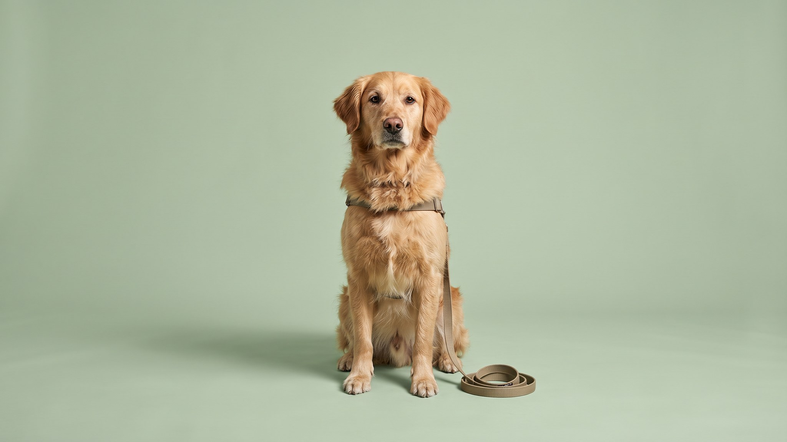

Выгул собаки в гололёд начинается с выбора покрытия: утоптанный снег и шероховатая дорожка дают лучшее сцепление, чем гладкий лёд у подъезда. Короткий поводок помогает остановить рывок до скользкого участка. Здесь даны проверка маршрута, порядок движения, признаки дискомфорта и чек-лист после возвращения.
🐾 Заведите дневник ухода за собакой
Вес, шерсть, обработки, прививки — всё в одном месте. А если что-то смущает, AI-ветеринар ответит круглосуточно и бесплатно.
Завести дневник → Завести в MAX →
У вас iPhone? AnimaLife есть в App Store
Осмотрите дорожку при дневном свете или заранее выберите освещённый маршрут возле дома. Ступени, спуски, плитка у входа и покрытые снегом лужи требуют особого внимания. Там лёд часто незаметен до первого шага. Запланируйте короткий круг, на котором можно повернуть назад без перехода через скользкий двор.
Возьмите обычный поводок удобной длины, шлейку или ошейник с проверенной посадкой и полотенце для домашнего осмотра. Рулетка оставляет слишком большой запас для рывка. Обувь с нескользящей подошвой уместна, если собака уже привыкла ходить в ней. Первое привыкание к ботинкам перенесите на сухой пол дома.
Перед каждым выходом оцените состояние собаки и собственную обувь. Питомцу, который поскальзывается на домашнем полу или неуверенно поднимается, опасный участок лучше сократить. В сильный гололёд выберите ближайшую безопасную площадку для короткого выгула вместо привычного дальнего круга.
Не ускоряйтесь, если собака потянула к другому животному или запаху. Остановитесь, перенаправьте внимание знакомой командой и продолжите после ослабления поводка. Велосипед и бег рядом с собакой на льду оставьте для другого покрытия. Темп задаёт самый скользкий участок маршрута.
В спокойном состоянии собака опирается на все лапы, сохраняет привычный ритм и готова идти за владельцем. После остановки она осматривается или принимает лакомство, затем продолжает движение без изменения походки. Короткая осторожность на новом покрытии понятна, но походка должна оставаться ровной.
Если снег собрался между пальцами, остановитесь в безопасном месте и аккуратно удалите его рукой. Не продолжайте движение, пока собака поджимает лапу. После возвращения походка должна восстановиться на сухом полу. Повторяющееся поскальзывание дома стоит записать на видео для консультации.
Обратитесь к врачу, если после падения собака хромает, не опирается на лапу или болезненно реагирует на обычное движение. Осмотр также нужен при заметной припухлости, повреждении подушечки и сохраняющемся поджимании лапы после отдыха. Не проверяйте сустав сгибанием и не заставляйте питомца идти дальше. Опишите врачу место падения и покажите видео походки, если оно есть.
🐾 Чтобы уход не держать в голове
AnimaLife напомнит, когда стричь когти, вычёсывать, купать и обрабатывать от паразитов, и заведёт дневник по вашему питомцу. Бесплатно.
Настроить напоминания → Настроить в MAX →
У вас iPhone? AnimaLife есть в App Store
🐾 Понравился разбор?
Подпишитесь на канал — каждый день разбираем по одному тревожному симптому у кошек и собак: что в пределах нормы, а когда пора к врачу. Подпишитесь, чтобы не пропустить разбор, который может спасти здоровье вашего питомца.
Материал носит информационный характер и не заменяет очную консультацию ветеринара.